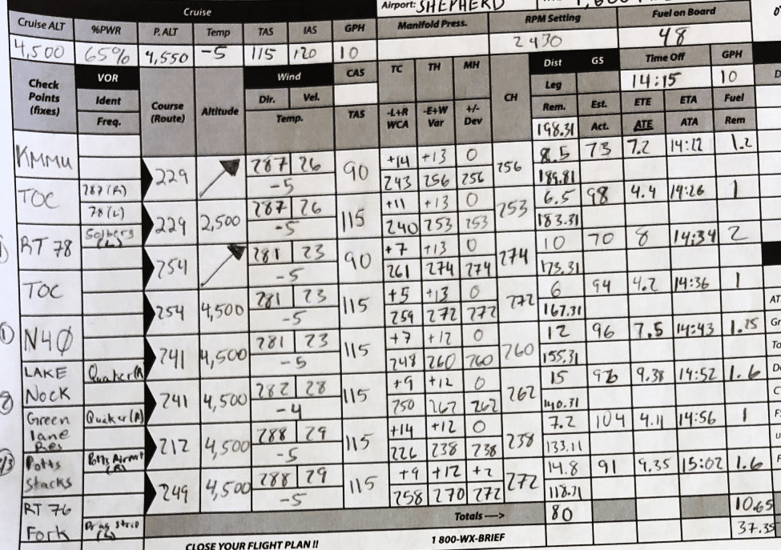

Howdy! I’m Carlos and I like tech and planes (among other things like having massive servings of pasta). I’m currently studying for my commercial license in Europe. So far most of my flight training has happened on a Piper PA28 (the -180 variant)

It’s from the late 60s, often there are at least 1 or 2 things that don’t work properly and it shows - the thing is old! I imagine at some point I’ll jump into modern jets, and so I am happy to spend the first few hundred hours being as much of an ‘aviator’ as possible.
As a bit of background, these planes are single pilot operation, so the idea is that whoever is flying is doing the navigating, the radios, the checklist, the flying, the communicating and the looking out and in. It can get busy. The one thing on this plane that is just hard to adapt to is how cramped it is and hot it can get - I’m talking about 38C/100F in a vibrating machine for 3h. And I say that with the knowledge of all the other issues this plane has (magnetos may drop excessively, gyro basically useless, fuel pump is old…) We get these things called kneeboards, that provide a ‘comfy’ space for us to write down things like the weather reports, the tower instructions and how accurate our routing plan is as we follow it along.
The one thing on this plane that is just hard to adapt to is how cramped it is and hot it can get - I’m talking about 38C/100F in a vibrating machine for 3h. And I say that with the knowledge of all the other issues this plane has (magnetos may drop excessively, gyro basically useless, fuel pump is old…) We get these things called kneeboards, that provide a ‘comfy’ space for us to write down things like the weather reports, the tower instructions and how accurate our routing plan is as we follow it along.
We get these things called kneeboards, that provide a ‘comfy’ space for us to write down things like the weather reports, the tower instructions and how accurate our routing plan is as we follow it along.
Whilst this picture looks pretty spacious, my plane is more cramped than that, and I’m sitting at a weirder angle. In my kneeboard / floating around the plane I have:
- Checklist (before taking off checklist, taxiing checklist, …)
- Map (big unfolding 1:400 map) (like the ones in the cartoons that open and open and open)
- Piece of paper to jot on (weather, tower instructions, tic tac toe..)
- Nav log (more on this soon)
{kind=link}
All of those documents have to be hot swapped for one another at different phases of the flight, and so there is actually a pretty big market for kneeboards and all the shapes and sizes they can come in.
The Nav log is the term we give for a paper with point-to-point instructions from one waypoint to another. It typically has a lot of information to help us navigate (and even more info that we really use but had to write down to work out other things). Here’s a sample, but don’t worry too much about reading it.
Realistically, out of all those numbers, I’m only really looking at a few because things like the wind correction angle only really matter so that I can work out other information (except in some edge cases).
Since I’ve grown happy with how I work out the items in the Nav log (an important skill when you are in training), now I occasionally use this tool (screenshot below) which automatically fills most of those fields for me. For the most part it is repetitive work, like “how do my heading and wind interact with each other, hmm let me see..
I simply look at my 1:400 map and then pick out the waypoints in this browser tool. This allows me to prep other parts of my fight that I might be doing that lesson whilst still having a fleshed out Nav log!

I then get a PDF which I can then copy by hand into my Kneeboard nav log. Sweet!
Like I said I also like computers and toyin’ around with them, and so the other day I bought a receipt printer. Why? Well…
- they seemed super cool for small projects
- don’t use ink
- can get them second hand easily
- plug and play into Linux (/dev/usb/lp0)
- look cute (mostly through the use of googly eyes)
So then I thought… hey… what about the windshield pillar or a-pillar (if you speak cars) in the plane?
I mean, that thing is in the middle of the cockpit, serves no function (other than the obvious one of preventing a total structural collapse) and is strangely receipt sized.. surely.. I could use that to alleviate some of my issues with the cramped kneeboard.
Why don’t I make a git project that will let me have nicely formatted receipt prints of my nav log.
I thought the Navlog would be the easiest thing to do so that’s where I started. Oh how wrong I was.
Knowing that I’ll be using SkyVector for the foreseeable future I wrote a quick (ish) script to grab their Nav log. Ideally I could export a Navlog in some format like the Garmin one, but not really - only a weirdly formatted PDF.
Anyways, fair enough -- I’ll just grab the whole PDF text with Ctrl+A and then ask the user to paste it into my script.
Thanks to:
- Regex (special weird code that searches for patterns in code)
- think “take this ‘he3ll4o, $$th3er8e’ and remove everything that isn’t a letter
- String splitting (less weird looking code that lets you play around with a chunk of text)
- think “from the above example, split hello there into [“hello”], [“there”]
- Some math to fill in here and there
- think “once we have [speed] and [distance] from the PDF work out the time taken”
I actually got a somewhat pretty looking Python dictionary / JSON of every leg of the journey.
{
"from": null,
"to": null,
"wind_direction": null,
"wind_speed": null,
"temp": null,
"temp_deviation": null,
"TAS": null,
"Track": null,
"WCA": null,
"TH": null,
"Var": null,
"Magnetic Heading": null,
"Ground Speed": null,
"Distance": null,
"ETA": null,
"CumulativeETA": null
}
Then that JSON was exported into a PHP file (thanks Mike42’s escpos-php/ library!) which is what I’m using for formatting text in the receipt printer (mostly just font size and text-wrapping) and boom!
I have to say it works surprisingly well. I use that to quickly understand where I am whilst I play with the map and communicate on our area’s busy air to air frequency.
I don’t consider this to be dangerous since I also carry with me the full Nav log, so at any doubt I have all the other details, but hey, it never hurts to have extra easily-accessible information in unused space!
The script also works for simpler things, like printing the lesson plan if you want to. Hopefully in version 2 I can make this feature a bit more extensive, and maybe have some nicer formatting, maybe a QR reference to the lesson plan, etc..etc…